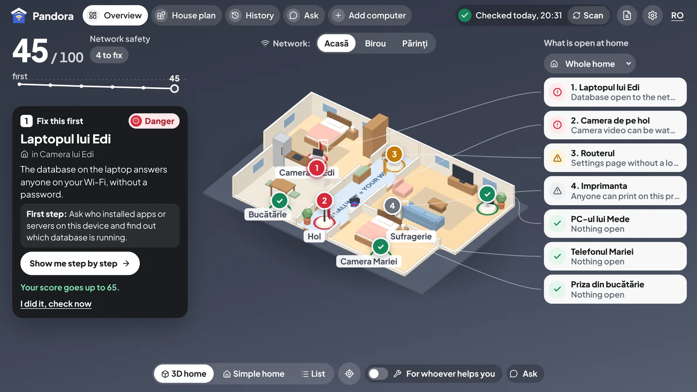
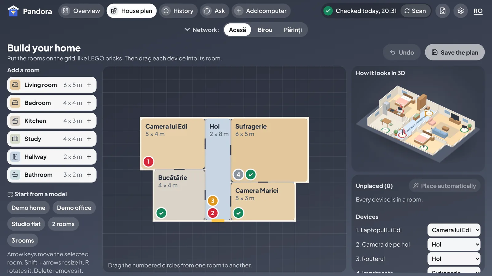
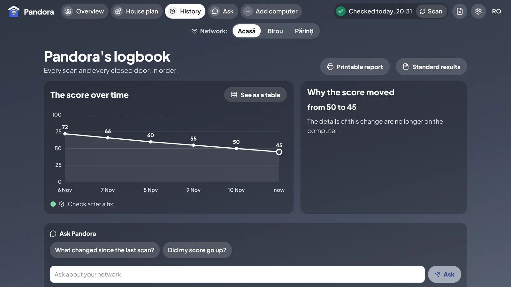
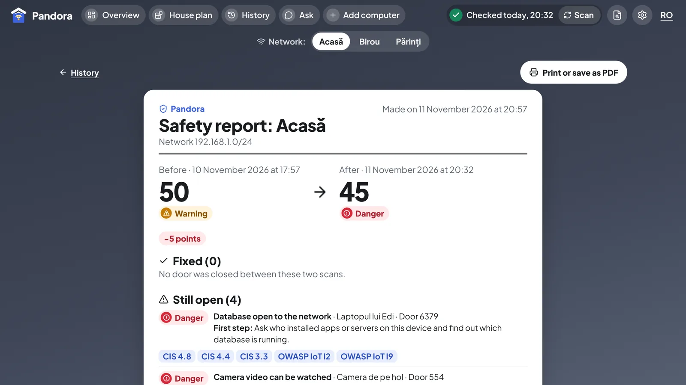
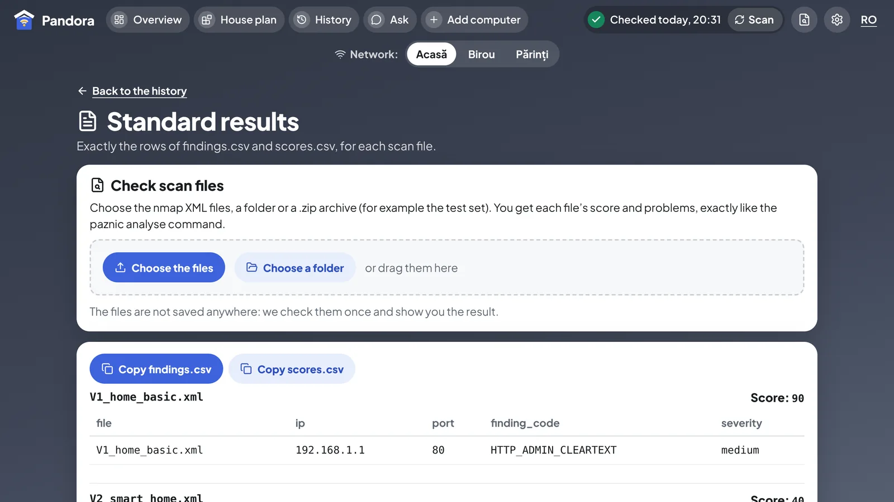
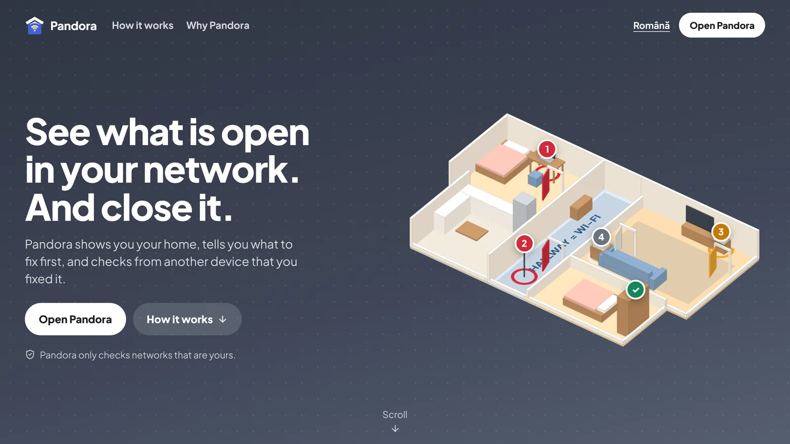
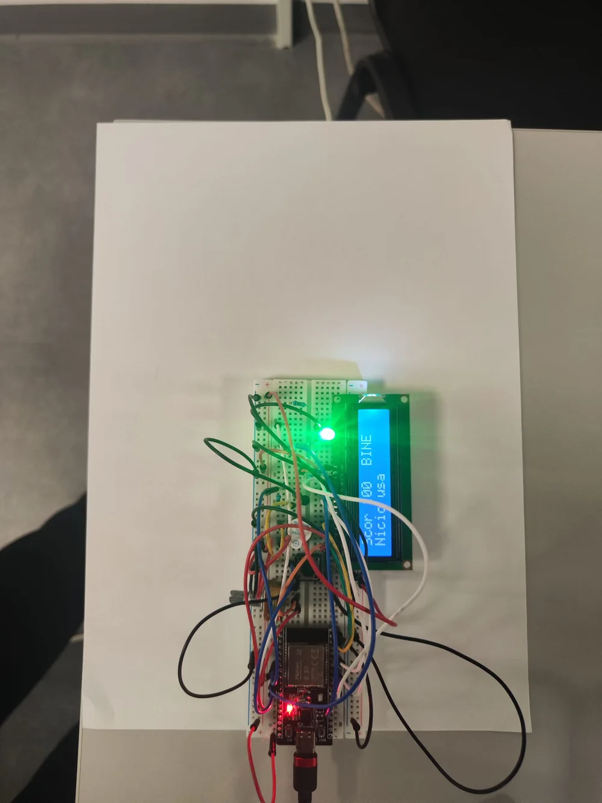
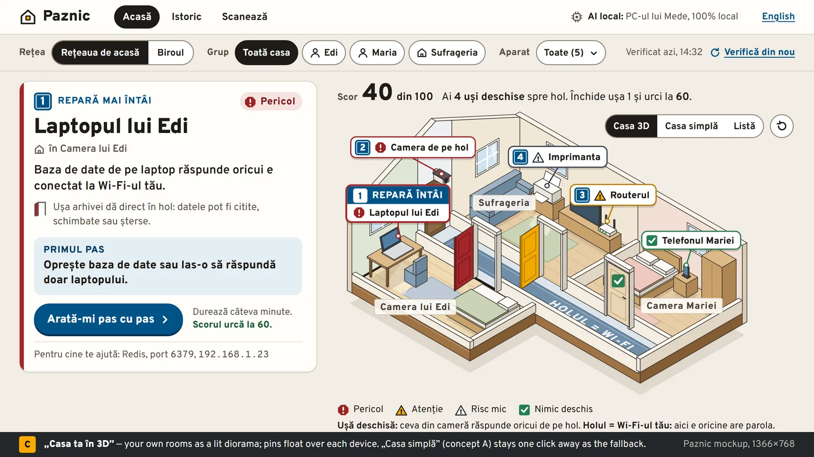

Winner · SmartHack 2026
Pandora
A home network check anyone can use.
Built in one hackathon weekend in November 2026 for the R Systems brief “Secure Networks, Simply Explained”. Pandora finds the devices on a home network and the doors each one leaves open, explains every risk in plain Romanian and English, and proves each fix with a re-scan.
- Rules decide, not AI. I co-owned the scanner and rules engine. The same scan always gives the same findings and score.
- Exact on the test data. 24 of 24 findings and 8 of 8 scores matched the organisers' validation set, checked in CI on every pull request.
- No fake fixes. I built the before and after comparison, the cleaning of untrusted text sent by devices, and the CI pipeline for Linux and Windows.
- Python
- FastAPI
- nmap
- React
- TypeScript
- Azure
- ESP32






The dashboard opens on one card: what to fix first.

